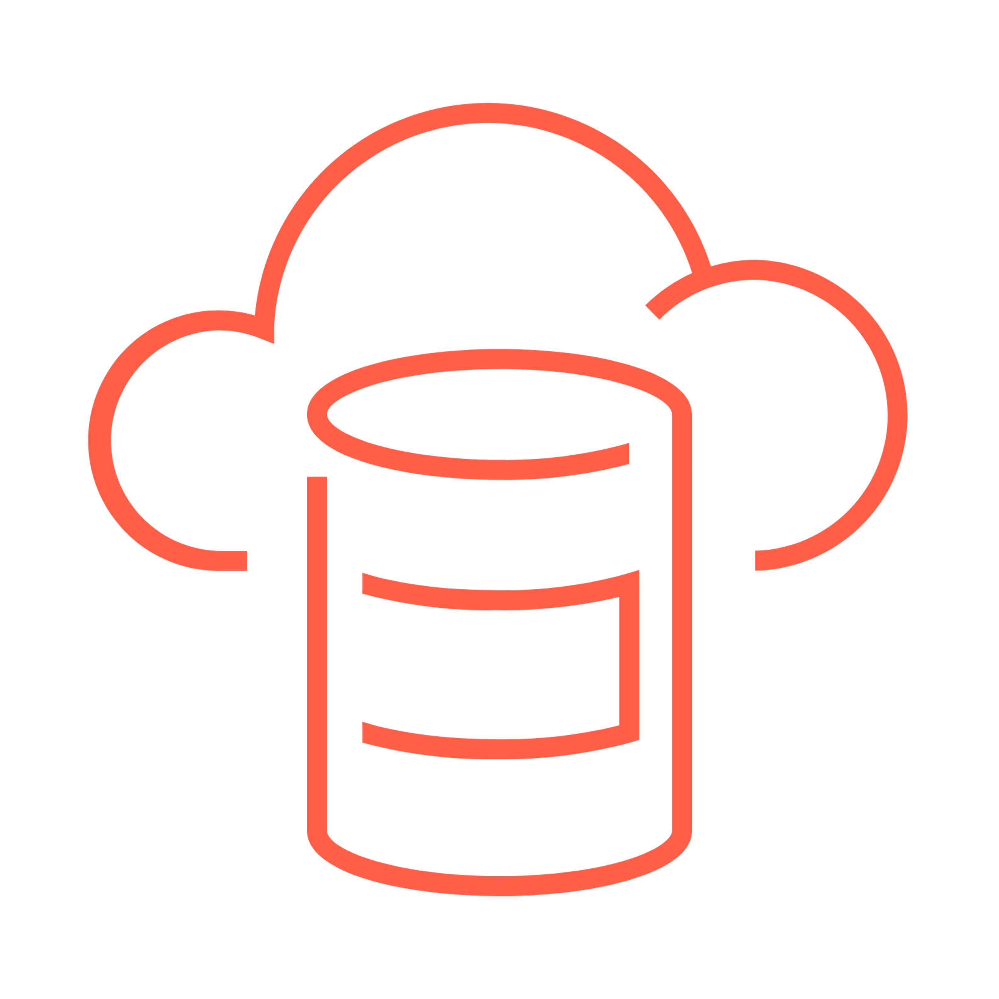

Section 2 · Data Ingestion and Loading · Quelle: Kurs 1, Kapitel 3–5, 17
Bevor Daten in Databricks analysiert, transformiert oder in Pipelines verarbeitet werden können, müssen sie zunächst aus einer Quelle – etwa Cloud-Speicher, Datenbanken oder SaaS-Anwendungen – in eine Delta-Tabelle geladen werden. Dieser Vorgang wird als Ingestion (Datenaufnahme) bezeichnet und ist der erste Schritt der sogenannten Medallion-Architektur (Bronze → Silver → Gold). Databricks bietet dafür mehrere Methoden an, die sich vor allem darin unterscheiden, ob Daten einmalig/batchweise oder inkrementell/kontinuierlich geladen werden sollen.

Die einfachste Methode ist die CREATE TABLE AS-Anweisung (kurz CTAS) in Kombination mit der Tabellenfunktion read_files(). Damit lässt sich eine Delta-Tabelle in einem einzigen Schritt anlegen und mit dem Ergebnis einer Abfrage befüllen. Die Funktion read_files() erkennt das Dateiformat automatisch, leitet das Schema aus Metadaten ab (bei Parquet sehr zuverlässig, da das Schema in der Datei eingebettet ist) und bietet zusätzliche Optionen wie schemaHints für Sonderfälle.
-- Vorschau der Rohdaten direkt aus dem Volume abfragen
SELECT *
FROM read_files(
'/Volumes/dbacademy_ecommerce/v01/raw/users-historical',
format => 'parquet'
)
LIMIT 10;
-- Delta-Tabelle mit CTAS erzeugen und befüllen
CREATE TABLE historical_users_bronze_ctas_rf
SELECT *
FROM read_files(
'/Volumes/dbacademy_ecommerce/v01/raw/users-historical',
format => 'parquet'
);
Mit DESCRIBE TABLE EXTENDED lässt sich anschließend prüfen, dass es sich um eine Managed Table handelt: Databricks verwaltet dabei sowohl die Metadaten als auch die zugrunde liegenden Daten. Wird eine solche Tabelle gelöscht, werden auch die Daten entfernt – im Gegensatz zu External Tables, bei denen Databricks nur die Metadaten verwaltet und die Daten unabhängig von der Tabelle bestehen bleiben.
COPY INTO ist ein SQL-Befehl, der Daten aus einem Dateipfad in eine bestehende Delta-Tabelle lädt. Der wichtigste Unterschied zu CTAS: COPY INTO ist idempotent – bereits geladene Dateien werden bei einem erneuten Aufruf automatisch übersprungen. Damit eignet sich der Befehl gut für wiederkehrende, geplante Batch-Jobs, die neu hinzugekommene Dateien laden sollen, ohne den gesamten Datenbestand neu einzulesen.
-- Tabelle mit COPY_OPTIONS für automatische Schema-Evolution befüllen
CREATE TABLE historical_users_bronze_ci_no_schema;
COPY INTO historical_users_bronze_ci_no_schema
FROM '/Volumes/dbacademy_ecommerce/v01/raw/users-historical'
FILEFORMAT = parquet
COPY_OPTIONS ('mergeSchema' = 'true');
-- Erneuter Aufruf: bereits geladene Dateien werden übersprungen
-- (num_affected_rows = 0, da keine neuen Dateien vorhanden sind)
COPY INTO historical_users_bronze_ci_no_schema
FROM '/Volumes/dbacademy_ecommerce/v01/raw/users-historical'
FILEFORMAT = parquet
COPY_OPTIONS ('mergeSchema' = 'true');
Ohne die Option mergeSchema = true schlägt COPY INTO fehl, sobald die Quelldateien mehr Spalten enthalten als die Zieltabelle (Fehler COPY_INTO_SCHEMA_MISMATCH_WITH_TARGET_TABLE). Die Option erlaubt es, das Tabellenschema automatisch um neue Spalten zu erweitern.
Für Quellen, die fortlaufend neue Dateien erhalten (z. B. Log-Dateien, Exporte aus vorgelagerten Systemen), empfiehlt Databricks Streaming Tables in Kombination mit Auto Loader. Auto Loader überwacht ein Verzeichnis effizient auf neue Dateien und verarbeitet nur die seit dem letzten Lauf hinzugekommenen Daten – ohne das gesamte Verzeichnis erneut auflisten zu müssen. In SQL wird Auto Loader über STREAM read_files(...) innerhalb einer CREATE OR REFRESH STREAMING TABLE-Anweisung aktiviert.
CREATE OR REFRESH STREAMING TABLE sql_csv_autoloader SCHEDULE EVERY 1 WEEK -- automatische, periodische Aktualisierung (optional) AS SELECT * FROM STREAM read_files( '/Volumes/dbacademy/<schema>/csv_files_autoloader_source', format => 'CSV', sep => '|', header => true ); -- Tabelle manuell aktualisieren (neue Dateien seit dem letzten Lauf laden) REFRESH STREAMING TABLE sql_csv_autoloader; -- Verlauf der Aktualisierungen einsehen DESCRIBE HISTORY sql_csv_autoloader;
Jeder REFRESH-Vorgang wird als eigene Version in der Tabellenhistorie protokolliert, sodass sich jederzeit nachvollziehen lässt, wann welche Datenmenge geladen wurde.
| Methode | Ladeart | Typischer Einsatzzweck |
|---|---|---|
CTAS + read_files() | Einmalig (voller Snapshot) | Erstbefüllung, Prototyping, Ad-hoc-Analysen |
COPY INTO | Inkrementell, idempotent | Wiederkehrende Batch-Jobs auf mittelgroßen Dateimengen |
| Streaming Table + Auto Loader | Inkrementell/kontinuierlich, skaliert auf sehr viele Dateien | Produktive Bronze-Schicht, wachsende/laufend eintreffende Datenmengen |
read_files() ist dabei die SQL-Funktion, über die Auto Loader innerhalb einer Streaming-Table-Definition angesprochen wird. CTAS und COPY INTO bleiben unterstützt und sinnvoll für einmalige bzw. einfache wiederkehrende Batch-Ladevorgänge, gelten aber nicht mehr als Standardempfehlung für neue produktive Pipelines. Für komplexere Quellen (SaaS-Anwendungen, Datenbanken) bietet Databricks zusätzlich Lakeflow Connect mit vorgefertigten, verwalteten Connectoren an (siehe Kapitel 4 dieses Themenordners).